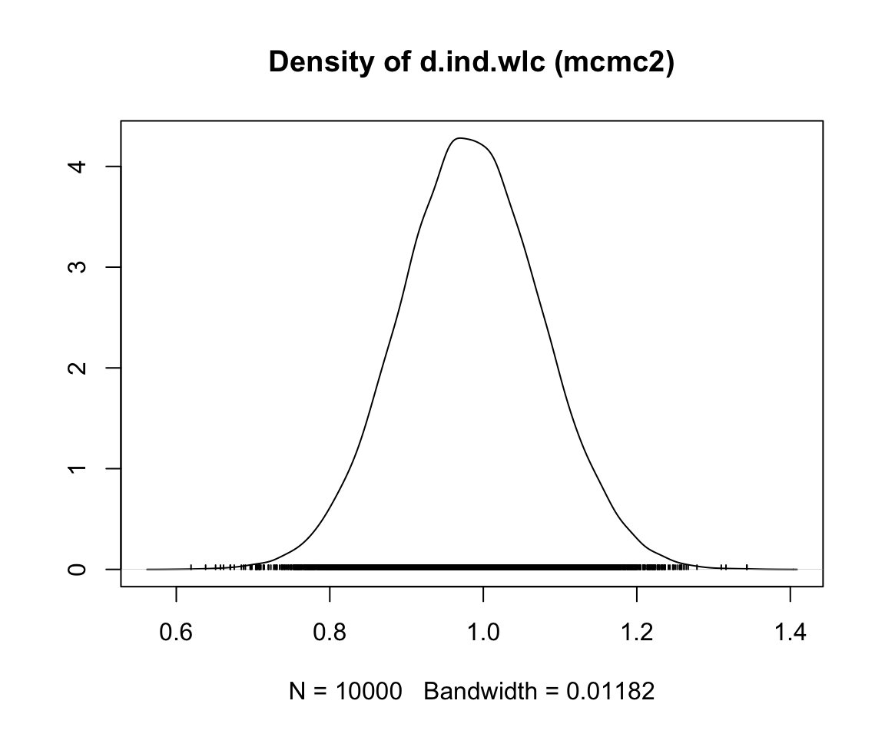

12 ネットワークメタ分析

臨 床試験や他の種類の介入研究のメタ分析を行う場合、通常、1個の特定の治療の真の効果の大きさを推定する。我々は、同じ種類の介入を同様の対照群、例えばプラセボと比較した研究を含める。他の条件がすべて同じであれば、これは特定の種類の治療が効果的かどうかを評価することを可能にする。
しかし、多くの研究分野では、「決定的な」治療法は一つだけではなく、いくつもあるのである。例えば、片頭痛はいろいろな薬物療法があるし、非薬物療法の選択肢もある。特に「成熟した」研究分野では、ある種の治療が有効であることを示すことは、あまり意味がないことが多いのである。むしろ、ある特定の適応症に対して、どの治療法が最も効果的であるかを調べたいのである。
これは新たな問題を引き起こす。従来のメタ分析で複数の治療の比較有効性を評価するためには、2つの治療間の直接比較が十分存在していることが必要である。しかし、残念なことに、そうではないこともよくある。多くの研究分野では、「弱い」対照群の代わりに、2つの治療の効果を直接比較した臨床試験は、一般にあったとしても少ない。このことは、従来のメタ分析では、複数の治療法の相対的な有効性に関する確かな証拠を確立できないことを意味することが多い。
しかし、2つ以上の治療法を直接比較することはできなくとも、間接的な証拠は通常利用可能である。異なる治療法が別々の試験で評価されたとしても、これらの試験はすべて同じ対照群を用いている可能性がある。例えば、直接比較されたことはない2種類の薬があるとしても、それぞれの効果がプラセボと比較して研究されている可能性がある。
ネットワークメタ分析 (network meta-analysis) では、このような間接的な比較を取り入れ、複数の介入の効果を同時に比較することがが可能である (Dias et al. 2013)。ネットワークメタ分析は、混合治療比較メタ分析 (mixed-treatment comparison meta-analysis) としても知られている (Valkenhoef et al. 2012)。これは、複数の直接的・間接的な治療比較を1つのモデルに統合し、比較の「ネットワーク」として形式化することができるからである。
ネットワークメタ分析は「ホット」な研究トピックである。この10年間で、バイオ分野・メディカル分野やその他の分野の応用研究者によって取り上げられることが増えてきた。しかし、この方法には、異質性やいわゆるネットワークの非一貫性 (network inconsistency) に関する、通常のメタ分析以上に課題や落とし穴もある (Salanti et al. 2014)。
したがって、まずネットワークメタ分析モデルの中核的な構成要素と前提について議論することが重要である。ネットワークメタ分析の基礎は、少し抽象的になることがある。そこで、この手法の理解を深めるために、本質的な内容を少しずつ見ていこう。
12.1 ネットワークメタ分析とは何か?
12.1.1 直接証拠と間接証拠
まず、治療の「ネットワーク」とは何を意味するのかを理解する必要がある。ある無作為化比較試験 \(i\) からデータを抽出し、治療Aの効果を他の条件B (例えば、待機リスト対照群) と比較したとする。この比較を図式化することができる。

このように治療法の比較を視覚的に表現したものをグラフと呼ぶ。グラフは、異なるオブジェクトが互いにどのように関連しているかをモデル化するために使用される構造であり、このトピックに関する数学の分野として、グラフ理論が存在する。
このグラフには２つの主要な構成要素がある。まず、試行 \(i\) における二つの条件AとBを表す二つの円(いわゆるノード)である。次に、この2つのノードを結ぶ線である。この線はエッジと呼ばれる。エッジは、A と B がどのように関係するかを表す。ここでは、この線は非常に簡単に解釈できる。A と B を比較したときに観測される効果の大きさ \(\theta_{i\text{,A,B}}\) で A と B の関係を表すことができる。この効果の大きさは、例えば、結果の指標によって標準化平均差 (SMD) やオッズ比などで表現することが可能である。
さて、別の試験 \(j\) からもデータを得たとする。この試験でも対照条件Bを用いたが、Aを投与する代わりに別の治療法Cを用いた。

これで最初の小さなネットワークができあがる。グラフに2つの効果量推定値が含まれていることがよくわかる。A と B を比較した \(\hat\theta_{i\text{,A,B}}\) と、C と B を比較した \(\hat\theta_{j\text{,C,B}}\) である。これらの効果量は両方とも「実際の」試験で直接観察されているので、我々はその情報を直接的証拠と呼んでいる。したがって、これらの効果量を \(\hat\theta^{\text{direct}}_{\text{B,A}}\) と \(\hat\theta^{\text{direct}}_{\text{B,C}}\) で表記する。この表記で条件 B が最初に来るのは、基準グループと決めたからである。B を参照条件としたのは、両試験で対照群として用いられていたからである。
新しいグラフでは、すべてのノード (条件) は、直接的か、間接的に接続されている。B 条件 (対照群) は、他のすべてのノードに直接接続されている。B から他の2つのノード A、C に行くには、グラフ上で1つの「ステップ」しか必要ない: B \(\rightarrow\) A, B \(\rightarrow\) C。一方、A と C は1つの直接接続しかなく、両方とも B に接続する: A \(\rightarrow\) B と C \(\rightarrow\) B。
しかし、A と C の間には間接的なつながりがある。このつながりは、B が2つの条件 A \(\rightarrow\) B と C \(\rightarrow\) B の間のリンク、すなわちブリッジとして機能するために存在する。その結果、ネットワークの構造から導き出される A と C の関係の間接的な証拠が存在する。
直接観測されたエッジの情報を使って、間接的に観測されたAとCの比較の効果を計算することが可能である。この非観測、間接効果量を \(\hat\theta^{\text{indirect}}_{\text{A,C}}\) と表記する。効果推定値は、次の式を用いて導出できる。 (Dias et al. 2018, chap. 1):
\[\begin{equation} \hat\theta_{\text{A,C}}^{\text{indirect}} = \hat\theta_{\text{B,A}}^{\text{direct}} - \hat\theta_{\text{B,C}}^{\text{direct}} \tag{12.1} \end{equation}\]
このステップは、ネットワークメタ分析の重要な要素である。上記の式は、たとえそれが試験で直接評価されなかったとしても、比較の効果量を推定することが可能である。
ネットワークメタ分析では、1つのモデルで直接および間接的なエビデンスを組み合わせる。この情報に基づいて、含まれる各治療の (相対) 効果を推定することが可能である。間接的な証拠を追加することで、その特定の比較に直接的な証拠がある場合でも、効果量推定の精度を上げることが可能である。全体として、ネットワークメタ分析にはいくつかの利点がある。
関連する一連の研究から入手可能なすべての情報を1つの分析にプールすることができる。従来のメタ分析で、例えばプラセボと異なる治療法を比較する試験をどのように扱うかを考えてみてみよう。それぞれの比較 (例えば、治療Aとプラセボの比較、治療Bとプラセボの比較、治療Aと治療Bの比較など) を別々のメタ分析でプールしなければならないだろう。
ネットワークメタ分析では、従来のメタ分析では不可能であった間接的なエビデンスをネットワークに取り込むことが可能である。ペアワイズメタ分析では、実際に試験に含まれた比較のうち、直接的な証拠のみをプールすることができる。
すべての仮定が満たされ、結果が十分に決定的であれば、ネットワークメタ分析によって、研究対象集団に対してどのタイプの治療が望ましいかを推論することができる。
これらはすべて興味深いものであるが、考慮すべき重要な限界がいくつかある。まず、間接効果量の推定値の分散がどのように計算されるかを見てみよう。
\[\begin{equation} \text{Var} \left(\hat\theta_{\text{A,C}}^{\text{indirect}} \right) = \text{Var} \left(\hat\theta_{\text{B,A}}^{\text{direct}} \right) + \text{Var} \left(\hat\theta_{\text{B,C}}^{\text{direct}} \right) \tag{12.2} \end{equation}\]
間接比較の分散を計算するために、直接比較の分散を 足し算 した。つまり、間接的な証拠から推定される効果量は、直接的な証拠に基づくものよりも常に大きな分散を持ち、したがって精度も低くなる (Dias et al. 2018, chap. 1)。これは極めて論理的である。数学的に推測しなければならない結果に比べ、観測データから推定された効果量には、はるかに高い信頼性を持つことができるのである。
さらにもう1つの問題がある。直接比較から間接的な証拠を推定することができる先ほどの式 (12.1) は、重要な前提条件である推移性 (transitivity) の仮定が満たされた場合にのみ成立する (船尾と黒田は transitivity の訳に「類似性」をあてている)。統計学的な観点からは、この仮定はネットワークの一貫性 (consistency) と訳される (訳注: Minds では「一貫性」、神田と船尾と黒田は「一致性」と訳している。このほか「整合性」と訳されることもある) (Efthimiou et al. 2016)。以下では、この2つの用語の意味と、それらがなぜ重要であるかを説明する。
12.1.2 推移性と一貫性
ネットワークメタ分析は、標準的なメタ分析手法の延長線上にある貴重な手法であるのは間違いない。しかし、その有効性には疑問が残る。ネットワークメタ分析に対する批判の多くは、推察される通り、間接的な証拠の利用を中心に展開されている (Edwards et al. 2009; Ioannidis 2006)。これは特に、比較のために直接証拠が実際に利用可能である場合を含んでいる。
(ランダム化) 試験の参加者は治療条件 (例えば A と B) のいずれかに偶然割り当てられるが、私たちのネットワークでは試験条件そのものはランダムに選択されていないという点は重要である。もちろん、これはすべて論理的なことである。通常、被験者をいくつかの試験条件のうちの1つにランダムに割り当てることは問題ない。しかし、研究者がサイコロを振って治験の治療条件を決めてから研究を展開することは考えにくい。ネットワークメタ分析では、選択された試験条件の構成がランダムなパターンになることはほとんどない。
これはネットワークメタ分析モデル自体の問題ではない (Dias et al. 2018, chap. 1)。ネットワークメタ分析モデルが偏るのは、試験内の特定の比較の選択、または非選択が、その比較の真の効果に依存する場合のみである (Dias et al. 2013)。この表現はかなり抽象的なので、少し詳しく説明しよう。
今述べた要件は、ネットワークメタ分析の推移性 (transitivity) という仮定から導かれたものである。これがネットワークメタ分析に特有の仮定なのか、それとも従来の pairwise メタ分析の仮定を単に拡張したものなのかについては、文献上でも意見が分かれているようである。また、この意見の相違は、文献における用語の一貫性のない使い方にも一部起因している可能性がある (Dias et al. 2018; Efthimiou et al. 2016; Song et al. 2009; Lu and Ades 2009)。
推移性の仮定の核となる考え方は、以前、式 (12.1) (Efthimiou et al. 2016) を用いて行ったように、(例えば比較 A \(-\) B と C \(-\) Bから) 直接証拠を組み合わせて、関連する比較 (例えば A \(-\) C) について間接証拠を作り出せることである。
推移性の仮定は交換性 (exchangeability) の概念と関係している。この前提条件については、ランダム効果モデルについて説明した Chapter 4.1.2 で既に述べた。交換可能性の仮定は、ある比較 \(i\) のそれぞれの真の効果量 \(\theta_i\) は、真の効果量の「包括的」分布からランダムに、独立に引き出された結果であることを言う。
この仮定を私たちのシナリオに置き換えると、ネットワークメタ分析は、\(K\) 件の臨床試験のセットと考える。ここで、このモデルの各試験は、\(M\) で示されるネットワークでのすべての治療比較を含むと仮定する (たとえば、A \(-\) B、A \(-\) C、B \(-\) C など)。しかし、いくつかの臨床試験では、治療比較が「削除」され、「欠落」しているものがある。その理由は、実際には、研究はすべての可能な治療法の選択肢を評価することはできないからである (Dias et al. 2013)。
重要な前提としては、ある比較、例えば A \(-\) B の効果は、試験間で交換可能であり、ある試験が実際にこの比較を評価したか、それが 「欠落」しているかは関係ない、ということである。ネットワークメタ分析では、ある比較 \(i\) の効果 \(\hat\theta_i\) が、効果量が直接または間接的な証拠によって得られたとしても、真の効果の包括的な分布からのランダムで独立した抽選に基づくとき、交換性が満たされる。
共変量や他の効果修飾因子 (調査集団の年齢層や治療強度など) が、例えば、条件 A 対 B、C 対 B を評価する試験間で均等に分布していない場合、推移性の仮定が破られる可能性がある (Song et al. 2009)。推移性を統計的に検証することはできないが、母集団、方法論、対象条件ができるだけ類似している試験のみを含めることで、この仮定に違反するリスクを軽減することがが可能である (Salanti et al. 2014)。
統計的な推移性の現れ方を一貫 (consistency) と言い、その欠如を非一貫 (inconsistency) と言う (Efthimiou et al. 2016; Cipriani et al. 2013)。一貫とは、直接証拠に基づく比較 (例: A \(-\) B) と間接証拠に基づく比較の相対的効果が異ならないことを意味する (Schwarzer, Carpenter, and Rücker 2015, chap. 8)。
\[\begin{equation} \theta_{\text{A,B}}^{\text{indirect}} = \theta_{\text{A,B}}^{\text{direct}} \tag{12.3} \end{equation}\]
ネットワークメタ分析モデルの非一貫を診断する方法として、net heat plots (Krahn, Binder, and König 2013) や node splitting method (Dias et al. 2010) など、いくつかの方法が提案されている。これらの方法については、以下のセクションで詳しく説明する。
12.1.3 ネットワークメタ分析のモデル
以上で、ネットワークメタ分析モデルの基本的な理論と前提条件についての説明を終える。以前は、3つのノードとエッジを持つ単純なネットワークを説明として使用していた。しかし、実際には、ネットワークメタ分析に含まれる治療法の数は、通常、はるかに多くなる。そのため、すぐにかなり複雑なネットワークになり、例えば次のようなネットワークになる。

しかし、ネットワーク内の治療法 \(S\) の数が増えれば、推定しなければならない (直接・間接) 一対比較 \(C\) の数は急増する。
したがって、効率的かつ内部的に一貫性のある方法で、利用可能なすべてのネットワークデータをプールできる計算モデルが必要である。ネットワークメタ分析のために、いくつかの統計的アプローチが開発されている (Efthimiou et al. 2016)。以下の章では、頻度論的階層モデル (frequentist hierarchical model) とベイズ階層モデル (Bayesian hierarchical model) について説明し、それらがどのように R に実装され得るかを説明する。
どのモデル手法を使うべきか？
複数のネットワークメタ分析モデルがある場合、それぞれの統計手法が異なることもありうる。良いことにサンプルサイズが十分であれば、どれも同じ結果を出すはずである (Shim et al. 2019)。一般的に、ネットワークメタ分析の方法は、他の方法よりも有効であるとか、有効でなかったりすることはない。そのため、直感的に選ぶか、またはそれを実装している R パッケージの機能に基づいて、どちらかの方法を安全に選択することがが可能である (Efthimiou et al. 2016)。
ほとんどの分野では、ベイズ的アプローチよりも頻度論的推論に基づく手法の方が (今でも) ずっと一般的である。これは、人によっては、頻度論的モデルが生み出す結果をより簡単に理解することができるためかもしれない。頻度論的モデルのデメリットとしては、 R における頻度論的ネットワークメタ分析の実装 (次に取り上げる) では、ベイズモデルで可能なメタ回帰がまだサポートされていないことが挙げられる。
実際には、メインの分析に1つのアプローチを選択し、感度分析でもう1つのアプローチを採用するのが有効な戦略である。2つの手法が同じ結論に至れば、その知見が信頼に足るものであるという確信が得られる。
12.2 頻度論的ネットワークメタ分析
以下では、{netmeta} パッケージ (Rücker et al. 2020) を用いたネットワークメタ分析の実行方法を説明する。このパッケージは、頻度論的 (frequentist) 枠組みでネットワークメタ分析モデルを推定することが可能である。{netmeta} で使用されている手法は、もともと電気ネットワーク用に開発されたグラフ理論的手法から派生したものである (Rücker 2012)。
確率の頻度論的解釈
頻度論的とは、ある事象 \(E\) の確率を解釈するための一般的な理論的アプローチである。頻出論的アプローチは、あるプロセス (例えば実験) を何度も何度も繰り返した場合に\(E\) が発生すると予想される頻度で \(E\) の確率を定義する (Aronow and Miller 2019, chap. 1.1.1)。
頻度論的な考え方は、定量的な研究者が日常的に使う多くの統計処理、例えば有意性検定、信頼区間の計算、\(p\) 値の計算などの核心となるものである。
12.2.1 グラフ理論モデル
ここで、{netmeta} パッケージで実装されているネットワークメタ分析モデルがどのように定式化されるかを説明しよう。いくつかの臨床試験から効果量のデータを集めたとする。そして、\(K\) 件すべての試験を調べて、試験に含まれる治療比較の総数を数える。この対の比較の数を \(M\) 件とする。
そして、各比較 \(m\) に対する効果量 \(\hat\theta_m\) を計算し、全ての効果量をベクトル \(\boldsymbol{\hat\theta} = (\hat\theta_1, \hat\theta_2, \dots, \hat\theta_M)\) に集める。ネットワークメタ分析を行うには、この観測された効果量のベクトル \(\boldsymbol{\hat\theta}\) がどのように生成されたかを記述するモデルが必要である。{netmeta}では、以下のようなモデルを用いる (Schwarzer, Carpenter, and Rücker 2015, chap. 8)。
\[\begin{equation} \boldsymbol{\hat\theta} =\boldsymbol{X} \boldsymbol{\theta}_{\text{treat}} + \boldsymbol{\epsilon} \tag{12.4} \end{equation}\]
観測された効果の大きさのベクトル \(\boldsymbol{\hat\theta}\) は、式の右辺 (私たちのモデル) によって生成されたと仮定する。前段の \(\boldsymbol{X}\) は \(m \times n\) デザイン行列で、列は異なる治療法 \(n\)、行は治療比較 \(m\) を表している。この行列では、治療比較は同じ行の1と-1で定義され、列の位置は比較される治療と対応する。
式の最も重要な部分は、ベクトル \(\boldsymbol{\theta}_{\text{treat}}\) である。このベクトルは、ネットワーク内の \(n\) 個のユニークな治療の真の 効果を含みる。このベクトルは、ネットワークメタ分析モデルが推定する必要があるもので、ネットワーク内のどの治療が最も効果的であるかを決定することを可能にするからである。
パラメータ \(\boldsymbol{\epsilon}\) は、すべての比較のサンプリング誤差\(\epsilon_m\)を含むベクトルである。各比較のサンプリング誤差は、平均0、分散\(\sigma^2_m\)のガウス正規分布から無作為抽出であると仮定する。
\[\begin{equation} \epsilon_m \sim \mathcal{N}(0,\sigma_m^2) \tag{12.4} \end{equation}\]
モデル式を説明するために (Schwarzer, Carpenter, and Rücker 2015, 189参照)、私たちのネットワークメタ分析が \(K=\) 5 件の研究から構成されていると想像する。各研究は、ユニークな治療比較を含む (すなわち、\(K=M\))。これらの比較は、A \(-\) B, A \(-\) C, A \(-\) D, B \(-\) C, および B \(-\) Dである。この結果、(観測された) 比較のベクトルは \(\boldsymbol{\hat\theta} = (\hat\theta_{1\text{,A,B}}, \hat\theta_{2\text{,A,C}}, \hat\theta_{4\text{,A,D}}, \hat\theta_{4\text{,B,C}}, \hat\theta_{5\text{,B,D}})^\top\)。 私たちの目的は、ネットワークに含まれる4つの条件全ての真の効果量、\(\boldsymbol{\theta}_{\text{treat}} = (\theta_{\text{A}}, \theta_{\text{B}}, \theta_{\text{C}}, \theta_{\text{D}})^\top\) を推定することである。これらのパラメータをモデルの式に代入すると、次のような式が得られる。
\[\begin{align} \boldsymbol{\hat\theta} &= \boldsymbol{X} \boldsymbol{\theta}_{\text{treat}} + \boldsymbol{\epsilon} \notag \\ \begin{bmatrix} \hat\theta_{1\text{,A,B}} \\ \hat\theta_{2\text{,A,C}} \\ \hat\theta_{3\text{,A,D}} \\ \hat\theta_{4\text{,B,C}} \\ \hat\theta_{5\text{,B,D}} \\ \end{bmatrix} &= \begin{bmatrix} 1 & -1 & 0 & 0 \\ 1 & 0 & -1 & 0 \\ 1 & 0 & 0 & -1 \\ 0 & 1 & -1 & 0 \\ 0 & 1 & 0 & -1 \\ \end{bmatrix} \begin{bmatrix} \theta_{\text{A}} \\ \theta_{\text{B}} \\ \theta_{\text{C}} \\ \theta_{\text{D}} \\ \end{bmatrix} + \begin{bmatrix} \epsilon_{1} \\ \epsilon_{2} \\ \epsilon_{3} \\ \epsilon_{4} \\ \epsilon_{5} \\ \end{bmatrix} \tag{12.5} \end{align}\]
なお、このモデル式は、現在のままでは数学的な観点から問題がある。今のところ、このモデルはoverparameterizedである。手元の情報に基づいて推定するには、私たちのモデルにはあまりにも多くのパラメータ \(\boldsymbol{\theta}_{\text{treat}}\) が存在する。
これは、デザイン行列 \(\boldsymbol{X}\) がフルランクでないことと関係がある。ここでは、行列は、その列がすべて独立でないとき、フルランクを持たない。または、別の言い方をすると、独立列の数が列の総数 \(n\) より小さいとき、フルランクを持たない 61 。治療のネットワークを扱っているので、治療の組み合わせが互いに完全に独立でないことは明らかである。例えば、治療Dの列 (4列目) は、最初の3列の線形結合として記述することができる 62 。
全体として、たかだか \(n-1\) 個の独立した治療比較が存在することになるが、ここでのモデルは常に \(\boldsymbol{\theta}_{\text{treat}}\) の \(n\) 個の治療の真の効果を推定しなければならない。したがって、この行列はフルランクではない。このように \(\boldsymbol{X}\) がフルランクを持たないということは、invertibleではないということである。したがって、\(\boldsymbol{\theta}_{\text{treat}}\) は (加重) 最小二乗法を使って直接推定することができないのである。
そこで、{netmeta} に実装されているグラフ理論のアプローチが解決策を提供する。このアプローチの背後にある退屈な数学的詳細については、{netmeta} パッケージが作業してくれるので、ここでは割愛する。この方法は、いわゆる Moore-Penrose 擬似逆行列を構築し、重み付き最小二乗法を用いてネットワークモデルの適合値を計算することができる、ということだけを述べておく。
この手順では、2つ以上のペアワイズ比較 (つまり、2つ以上の条件が比較された研究) を行うマルチアーム (訳注: arm は群と同じ意味) 研究についても考慮する。マルチアーム比較は、少なくとも1つの条件が2回以上比較されるため、相関がある (Chapter 3.5.2)。このことは、このモデルで説明しない限り、マルチアーム試験の比較の精度が人為的に高くなることを意味する。
また、このモデルでは、試験間の異質性 (heterogeneity) の推定値を組み込むことができる。「従来の」ランダム効果モデル (Chapter 4.1.2) と同様に、比較 \(m\) の分散に推定異質性分散 \(\hat\tau^2\) を追加することで実現する。すなわち \(s^2_m + \hat\tau^2\) である。{netmeta}パッケージでは、DerSimonian-Laird estimator 法 (Jackson, White, and Riley 2013, Chapter 4.1.2.1 も参照) を適応して\(\tau^2\)値を推定している。
\(I^2\) に相当するものも計算でき、これでネットワーク内の非一貫 (inconsistency) の量を表すことができる。この \(I^2\) は、Higgins and Thompson の式と同様に、\(Q\) から導かれる。ただし、ネットワークメタ分析では、\(Q\) はネットワークの総異質性に変換される (\(Q_{\text{total}}\)とも表記される)。したがって、以下の式が使われる。
\[\begin{equation} I^2 = \text{max} \left(\frac{Q_{\text{total}}-\text{d.f.}} {Q_{\text{total}}}, 0 \right) \tag{12.6} \end{equation}\]
ここで、ネットワークの自由度は:
\[\begin{equation} \text{d.f.} = \left( \sum^K_{k=1}p_k-1 \right)- (n-1) \tag{12.7} \end{equation}\]
とし、\(K\) を研究の総数、\(p\) をある研究 \(k\) における条件の数、\(n\) をネットワークモデルにおける治療の総数とする。
12.2.2 R での頻度論的ネットワークメタ分析
ここまでインプットしたら、いよいよ実践的な例題である。以下では、{netmeta} を使って、独自のネットワークメタ分析を行う。いつものように、まずパッケージをインストールし、それからライブラリからロードする。
12.2.2.1 データを準備
この図では、TherapyFormats データを使用している。このデータセットは、うつ病に対する認知行動療法の異なる提供形式の有効性を評価する実際のネットワークメタ分析 (P. Cuijpers, Noma, et al. 2019) をモデルとしている。含まれるすべての研究は、うつ病の症状に対する効果がテスト後に測定されたランダム化比較試験である。含まれる比較の効果量は、分析された2つの条件間の標準化平均差 (SMD) として表現されている。
データを見てみよう。
## author TE seTE treat1 treat2
## 1 Ausbun, 1997 0.092 0.195 ind grp
## 2 Crable, 1986 -0.675 0.350 ind grp
## 3 Thiede, 2011 -0.107 0.198 ind grp
## 4 Bonertz, 2015 -0.090 0.324 ind grp
## 5 Joy, 2002 -0.135 0.453 ind grp
## 6 Jones, 2013 -0.217 0.289 ind grp2列目の
TEには、すべての比較の効果量、そしてseTEにはそれぞれの標準誤差が格納される。{netmeta} を使用するには、データセット内の全ての効果量が既に計算されている必要がある。効果量の計算方法については、Chapter 3 で説明したが、Chapter 17 の章では、さらに詳しい計算方法を紹介している。このデータセットには、さらに2つの列がある。このデータセットには、さらに2つの列が含まれているが、ここでは示していない。これらの列には、単純に条件のフルネームが格納されている。
studlab列は、特定の治療比較がどの研究から抽出されたかを示す、ユニークな研究ラベルを含んでいる。この列は、マルチアーム研究 (すなわち、複数の比較対象がある研究) をチェックするのに便利である。これは、tableとas.matrix関数を使用して行うことが可能である。
## [...]
## Bengston, 2004 1
## Blevins, 2003 1
## Bond, 1988 1
## Bonertz, 2015 1
## Breiman, 2001 3
## [...]TherapyFormatsのデータセットには、Breiman によるマルチアーム研究1件しか含まれていない。この研究には3つの比較が含まれているが、他の研究は1つしか含まれていない。
ネットワークメタ分析のデータを作成する際には、(1) データセットに研究ラベルの列を含めること、(2) その列で個々の研究に固有の名前を付けること、(3) 2つ以上の比較に貢献する研究には正確に同じ名前を付けることが不可欠となる。
12.2.2.2 モデルを適合
netmeta 関数を使って、最初のネットワークメタ分析モデルを適合させることが可能である。最も重要な引数は以下の通りである。
TE. 各比較の効果量を含むデータセットの列の名前である。seTE. 各比較の標準誤差を格納する列の名前。treat1. データセット中の 最初の 処置の名前を格納する列。treat2. データセット中のtreat2の列には、2番目の 処置の名前が含まれている。studlab. 比較対象が抽出された研究。この引数はオプションであるが、常に指定することを勧める。この引数は任意であるが、常に指定することを推奨する。これは、私たちのネットワークにマルチアーム試験がある場合に、この関数に知らせる唯一の方法である。data. データセットの名前である。sm. 使用する効果量の種類。"RD"(リスク差)、"RR"(リスク比)、"OR"(オッズ比)、"HR"(ハザード比)、"MD"(平均差)、"SMD"(標準化平均差) などとすることができる。その他の利用可能な指標については、関数ドキュメント (?netmeta) を参照。fixed. 固定効果ネットワークメタ分析を行うかどうか？TRUEまたはFALSEを指定する必要がある。random. ランダム効果モデルを用いるか？TRUEまたはFALSE。reference.group. 他の全ての治療に対して、どの治療を参照治療とするか (例:reference.group = "grp") を指定することが可能である。tol.multiarm. マルチアーム研究の比較の効果量は、デザイン上、一貫している。しかし、原著論文では、各比較でわずかにずれた結果が報告されていることがあり、その結果、一貫性が損なわれていることがある。この引数で、効果量とその標準誤差の非一貫性に対する許容閾値 (数値) を指定することで、モデルで許容される。details.chkmultiarm. 効果量の不一致があるマルチアーム比較の推定値を表示するかどうか (TRUEまたはFALSE).sep.trts. 比較ラベルのセパレーターとして使用する文字 (例:" vs. ")。
最初のネットワークメタ分析の結果は、m.netmetaという名前で保存される。参照グループとして、“care as usual” ("cau") 条件を使用する。今は、固定効果モデルが適切であると仮定しよう。この場合、次のようなコードになる。
m.netmeta <- netmeta(TE = TE,
seTE = seTE,
treat1 = treat1,
treat2 = treat2,
studlab = author,
data = TherapyFormats,
sm = "SMD",
fixed = TRUE,
random = FALSE,
reference.group = "cau",
details.chkmultiarm = TRUE,
sep.trts = " vs ")
summary(m.netmeta)## Original data (with adjusted standard errors for multi-arm studies):
##
## treat1 treat2 TE seTE seTE.adj narms multiarm
## [...]
## Burgan, 2012 ind tel -0.31 0.13 0.1390 2
## Belk, 1986 ind tel -0.17 0.08 0.0830 2
## Ledbetter, 1984 ind tel -0.00 0.23 0.2310 2
## Narum, 1986 ind tel 0.03 0.33 0.3380 2
## Breiman, 2001 ind wlc -0.75 0.51 0.6267 3 *
## [...]
##
## Number of treatment arms (by study):
## narms
## Ausbun, 1997 2
## Crable, 1986 2
## Thiede, 2011 2
## Bonertz, 2015 2
## Joy, 2002 2
## [...]
##
## Results (fixed effects model):
##
## treat1 treat2 SMD 95%-CI Q leverage
## Ausbun, 1997 grp ind 0.06 [ 0.00; 0.12] 0.64 0.03
## Crable, 1986 grp ind 0.06 [ 0.00; 0.12] 3.05 0.01
## Thiede, 2011 grp ind 0.06 [ 0.00; 0.12] 0.05 0.03
## Bonertz, 2015 grp ind 0.06 [ 0.00; 0.12] 0.01 0.01
## Joy, 2002 grp ind 0.06 [ 0.00; 0.12] 0.02 0.00
## [....]
##
## Number of studies: k = 182
## Number of treatments: n = 7
## Number of pairwise comparisons: m = 184
## Number of designs: d = 17
##
## Fixed effects model
##
## Treatment estimate (sm = 'SMD', comparison: other treatments vs 'cau'):
## SMD 95%-CI z p-value
## cau . . . .
## grp -0.5767 [-0.6310; -0.5224] -20.81 < 0.0001
## gsh -0.3940 [-0.4588; -0.3292] -11.92 < 0.0001
## ind -0.6403 [-0.6890; -0.5915] -25.74 < 0.0001
## tel -0.5134 [-0.6078; -0.4190] -10.65 < 0.0001
## ush -0.1294 [-0.2149; -0.0439] -2.97 0.0030
## wlc 0.2584 [ 0.2011; 0.3157] 8.84 < 0.0001
##
##
## Quantifying heterogeneity / inconsistency:
## tau^2 = 0.26; tau = 0.51; I^2 = 89.6% [88.3%; 90.7%]
##
## Tests of heterogeneity (within designs) and inconsistency (between designs):
## Q d.f. p-value
## Total 1696.84 177 < 0.0001
## Within designs 1595.02 165 < 0.0001
## Between designs 101.83 12 < 0.0001この出力には見るべきものがたくさんあるので、順を追って見ていこう。最初に見るのは、各比較の計算された効果量である。アスタリスク記号 (*) は、標準誤差が (効果量の依存性を考慮し) 修正された私たちのマルチアーム研究を示している。その下には、各研究の治療群の数の概要が示されている。
次の表は、私たちの (固定効果) ネットワーク・メタ分析モデルにおける各比較の適合値を示している。この表の \(Q\) 列は、どの比較がネットワーク全体の非一貫性に大きく寄与しているかを示しており、とても興味深い。例えば、Crable, 1986 の \(Q\) 値は \(Q=\) 3.05 で、かなり高いことがわかる。
そして、ネットワークメタ分析の核心である「治療推定値」にたどり着く。指定されたように、すべての治療の効果は、通常通りのケアとの比較で表示されているが、それが cau の効果が表示されていない理由である。その下に、このネットワークモデルにおける異質性/非一貫性が非常に高く、\(I^2=\) 89.6%であることを見ることができる。これは、固定効果モデルの選択がおそらく適切ではなかったことを示している (この点については後ほど触れる)。
出力の最後の部分 (Tests of heterogeneity) は、ネットワークにおける総異質性を、2つのコンポーネントに分解している。すなわち、デザイン内の異質性、およびデザイン間の不一致である。「デザイン」とは、例えばA \(-\) B、A \(-\) B \(-\) Cのように、1つの試験に含まれる条件の選択と定義される。全く同じ条件を含む試験間で真の効果量の差がある場合、デザイン内異質性と呼ぶことができる。一方、デザイン間のばらつきは、このネットワークの非一貫性を反映している。デザイン内異質性、デザイン間非一貫性ともに非常に有意である (\(p\)s < 0.001)。
これは、ランダム効果モデルが指示されている可能性を示すもう一つの兆候である。これをさらに裏付けるために、full design-by-treatment interaction random-effects model (J. Higgins et al. 2012) に基づく全体の非一貫性 (total inconsistency) を算出しよう。これを行うには、m.netmeta オブジェクトを decomp.design 関数に当てはめればよい。
decomp.design(m.netmeta)## Q statistics to assess homogeneity / consistency
## [...]
## Design-specific decomposition of within-designs Q statistic
##
## Design Q df p-value
## cau vs grp 82.5 20 < 0.0001
## cau vs gsh 0.7 7 0.9982
## cau vs ind 100.0 29 < 0.0001
## cau vs tel 11.4 5 0.0440
## [...]
##
## Between-designs Q statistic after detaching of single designs
##
## Detached design Q df p-value
## [...]
## ind vs wlc 77.23 11 < 0.0001
## tel vs wlc 95.45 11 < 0.0001
## ush vs wlc 95.81 11 < 0.0001
## gsh vs ind vs wlc 101.78 10 < 0.0001
##
## Q statistic to assess consistency under the assumption of
## a full design-by-treatment interaction random effects model
##
## Q df p-value tau.within tau2.within
## Between designs 3.82 12 0.9865 0.5403 0.2919出力では、まず、このモデルにおけるデザイン内およびデザイン間の異質性/非一貫性に対する各デザインの個々の寄与を示す \(Q\) 値が示される。出力の重要な部分は、最後の部分 (Q statistic to assess consistency under the assumption of a full design-by-treatment interaction random effects model) である。完全な design-by-treatment のランダム効果モデルを仮定すると、\(Q\) の値がかなり減少し (以前は \(Q=\) 101.83、今は \(Q=\) 3.83)、デザイン間の非一貫性が有意でなくなったことがわかる (\(p=\) 0.9865)。
このことは、私たちのネットワークモデルにおける非一貫性や異質性を説明するために、少なくとも部分的にランダム効果モデルが示される可能性をも示唆している。
12.2.2.3 ネットワークモデルのさらなる検証
12.2.2.3.1 ネットワークグラフ
netmeta を使ってネットワークメタ分析モデルをフィットさせた後、ネットワークグラフ を作成することができる。これは netgraph 関数を用いて行うことが可能である。netgraph 関数には多くの引数があり、コンソールで ?netgraph を実行すれば調べることができる。しかし、これらの引数のほとんどは、非常に賢明なデフォルト値を持っているので、あまり多くのことを指定する必要はない。
最初のステップとして、フィットしたモデル m.netmeta を関数に与えてみる。モデルでは短縮ラベルを使用しているので、プロットでは長いラベル (treat1.long と treat2.long に格納) に置き換える必要がある。これは、 labels 引数を用いて行うことができ、すべての治療法の完全な名前を指定する必要がある。治療ラベルは、 m.netmeta$trts に格納されているものと同じ順序である必要がある。
# 治療順序を表示 (短いラベル)
m.netmeta$trts## [1] "cau" "grp" "gsh" "ind" "tel" "ush" "wlc"
# フルネームを置き換え (see treat1.long と treat2.long を参照)
long.labels <- c("Care As Usual", "Group",
"Guided Self-Help",
"Individual", "Telephone",
"Unguided Self-Help",
"Waitlist")
netgraph(m.netmeta,
labels = long.labels)このネットワークグラフはいくつかの種類の情報を提示している。まず、ネットワークにおける比較の全体的な構造を見ることが可能である。これは、元のデータでどの治療が互いに比較されたかをよりよく理解することが可能である。
さらに、プロット中のエッジが異なる幅を持っていることがわかる。幅の大きさは、ネットワークで特定の比較を見つける頻度を表している。例えば、ガイド付きセルフヘルプのフォーマットは、多くの試験で待機リストと比較されていることがわかる。また、網掛けされた三角形で表現されたマルチアーム試験も見られる。これはBreimanによる研究で、ガイド付き自己啓発、個人セラピー、待機者リストの3つを比較したものである。
netgraph関数は、3Dグラフを描くこともでき、複雑なネットワーク構造をよりよく把握するのに便利である。この関数は、{rgl} パッケージがインストールされ、ロードされていることが必要である。3Dグラフを作成するためには、dim 引数を "3d" に設定するだけである。
12.2.2.3.2 直接証拠と間接証拠の可視化
次のステップでは、各比較を推定するために使用されるdirectとindirectの証拠の比率を見よう。{dmetar} の direct.evidence.plot 関数は、この目的のために開発された関数である。
この関数は、各推定比較に使用された直接証拠と間接証拠のパーセンテージを示すプロットを提供する。direct.evidence.plot関数が入力として必要とするのは、フィットしたネットワークメタ分析モデル m.netmetaのみである。
library(dmetar)
d.evidence <- direct.evidence.plot(m.netmeta)
plot(d.evidence)
見てわかるように、このネットワークモデルには、間接的な証拠だけで推論しなければならない推定値がいくつかあることがわかる。また、このプロットでは、各推定比較の最小並列度 (Minimal Parallelism) と平均パス長 (Mean Path Length) という2つの追加指標を得ることが可能である。König, Krahn, and Binder (2013) によると、平均パス長 > 2 であるとは、比較推定が特に注意して解釈されるべきことを意味する。
12.2.2.3.3 効果推計表
次に、すべての可能な治療比較について、このネットワークの推定値を見ることができる。これを行うには、 m.netmeta$TE.fixed (固定効果モデルを使用した場合) または m.netmeta$TE.random (ランダム効果モデルを使用した場合) に保存された行列を使用することで可能である。行列を読みやすくするために、いくつかの前処理をしておこう。まず、m.netmetaオブジェクトからデータを抽出し、行列の数値を小数点以下２桁に丸める。
result.matrix <- m.netmeta$TE.fixed
result.matrix <- round(result.matrix, 2)行列の1つの「三角形」が冗長な情報を持つことを考慮して、このコードを使って下の三角形を空の値に置き換える。
result.matrix[lower.tri(result.matrix, diag = FALSE)] <- NAこれにより、次のような結果が得られる。
result.matrix## cau grp gsh ind tel ush wlc
## cau 0 0.58 0.39 0.64 0.51 0.13 -0.26
## grp NA 0.00 -0.18 0.06 -0.06 -0.45 -0.84
## gsh NA NA 0.00 0.25 0.12 -0.26 -0.65
## ind NA NA NA 0.00 -0.13 -0.51 -0.90
## tel NA NA NA NA 0.00 -0.38 -0.77
## ush NA NA NA NA NA 0.00 -0.39
## wlc NA NA NA NA NA NA 0.00これらの結果を研究論文で報告する場合、各効果量の推定値の信頼区間を含める方がよいだろう。これは、 m.netmeta の lower.fixed と upper.fixed (または lower.random と upper.random ) 行列を使用して、以前と同じ方法で取得することが可能である。
さらに便利な方法は、netleague 関数を使用して、すべての推定効果量をエクスポートすることである。この関数は、上で作成したものと同じような表を作成する。しかし、netleague によって生成された行列では、上部の三角形は、このネットワークで利用可能な直接比較のプール効果量のみを表示し、我々がそれぞれの比較について従来のメタ分析を行った場合のようなものを達成することが可能である。我々はすべての比較について直接の証拠を持っているわけではないので、上側の三角形のいくつかのフィールドは空のままである。netleague が生成する行列の下側の三角形には、それぞれ比較の推定効果量が含まれる (間接的な証拠しか得られないものも含まれる)。
netleague の出力は、簡単に.csv ファイルにエクスポートすることができる。これは、ネットワークメタ分析の包括的な結果を1つの表で報告するために使用することが可能になる。この関数を使用するもう一つの大きな利点は、効果量推定値と信頼区間が各セルに一緒に表示されることである。このような治療推定表を作成して、“netleague.csv” という名前の .csv ファイルとして保存したい。これは、以下のコードを用いて実現しよう。
# 効果量テーブルを生成
netleague <- netleague(m.netmeta,
bracket = "(", # use round brackets
digits=2) # round to two digits
# 結果を保存 (ここでは固定効果モデル)
write.csv(netleague$fixed, "netleague.csv")12.2.2.3.4 治療法のランキング
ネットワークメタ分析で答えられる最も興味深い問題は、どの治療が最も高い効果を持つかということである。{netmeta} に実装された netrank 関数は、この点で役に立つ。これは、治療のランキングを生成することができ、どの治療が最大の効果をもたらす可能性が高いか低いかを示す。
netrank 関数は、netmeta 自体で使われているモデルと同様に、頻度論的アプローチに基づいている。この頻度論的手法は、治療の順位付けに P-score を使用している。これは、ある治療が他の治療よりも優れているという確実性を、すべての競合する治療に対して平均して測定するものである。P-スコアは、ベイズネットワークメタ分析の章で説明する SUCRA スコア(Rücker and Schwarzer 2015)と同等であることが示されている。
netrank 関数は入力として m.netmeta というモデルを必要とする。さらに、small.values パラメータを指定する必要がある。これは、比較において小さい (つまり、負の) 効果量が有益 ("good") または有害 ("bad") の効果を示しているかを定義するものである。ここでは、small.values = "good"を使用する。つまり、効果量が負であるとき、ある治療法がうつ病を減少させるのに有効であることを意味する。
netrank(m.netmeta, small.values = "good")## P-score
## ind 0.9958
## grp 0.8184
## tel 0.6837
## gsh 0.5022
## ush 0.3331
## cau 0.1669
## wlc 0.0000個人セラピー (ind) のPスコアが最も高く、この治療形式が特に有用であることを示している。逆に、待機者リスト (wlc) のPスコアはゼロである。これは、単に治療を待たせることは最良の選択肢ではないという直感と一致しているようである。
とはいえ、ランキンで最高スコアだからといって、ある治療法が「最善」であると自動的に結論づけるべきでは決してないだろう グ(Mbuagbaw et al. 2017)。このネットワークにおける不確実性をよりよく可視化する方法は、ある条件を比較群として使用したフォレストプロットを作成することである。
{netmeta} では、forest 関数を使用してこれを実現することができる。{netmeta}の forest 関数の動作は、Chapter 6 で説明した {meta} パッケージの forest 関数と非常によく似ている。主な違いは、forestプロットで参照グループを reference.group 引数で指定する必要があることである。また、care us usual ("cau") を使用する。
forest(m.netmeta,
reference.group = "cau",
sortvar = TE,
xlim = c(-1.3, 0.5),
smlab = paste("Therapy Formats vs. Care As Usual \n",
"(Depressive Symptoms)"),
drop.reference.group = TRUE,
label.left = "Favors Intervention",
label.right = "Favors Care As Usual",
labels = long.labels)フォレストプロットでは、個人療法以外にも高いパフォーマンスを示す治療形式があることがわかる。また、信頼区間の一部が重なっていることもわかる。このため、明確な判断は容易ではない。個別治療が最も良い結果を出しているように見えるが、いくつかの治療法も通常のケアと比較して大きな効果を上げている。
12.2.2.4 結果の妥当性を評価
12.2.2.4.1 ネットヒートプロット
{netmeta} パッケージは netheat という関数を内蔵しており、これにより ネットヒートプロット を作成することが可能である。ネットヒートプロットは、ネットワークモデルの非一貫性や、どのようなデザインが非一貫性に寄与しているかを評価するのに非常に有効である。
netheat 関数は、フィットしたネットワークメタ分析オブジェクトを必要とするだけで、プロットを生成する。
netheat(m.netmeta)この関数は、行の各デザインが他のデザイン (列) と比較される2次ヒートマップを生成する。重要な点は、行と列が、このネットワークにおける個々の治療比較ではなく、特定のデザインを意味することである。したがって、このプロットは、マルチアーム研究で使用されたデザイン (ガイド付き自助、個人療法、待機者リストの比較) の行と列も特徴としている。ネットヒートプロットには2つの重要な特徴がある(Schwarzer, Carpenter, and Rücker 2015, chap. 8)。
灰色のボックス。灰色のボックスは、ある治療比較が他の治療比較の推定にどれだけ重要であるかを示すものである。ボックスが大きければ大きいほど、その比較はより重要である。これを分析する簡単な方法は、プロットの行を次々に見ていき、各行でどのボックスが最も大きいかをチェックすることである。よくある発見は、ヒートマップの対角線上にあるボックスが大きいことである。これは、直接証拠が使われたことを意味するからである。例えば、特に大きなボックスは、 “cau vs grp” 行と “cau vs grp” 列の交点で見ることが可能である。
色のついた背景。色のついた背景は、行のデザインが列のデザインに起因する非一貫性の量を意味する。フィールドの色は、深い赤 (強い非一貫性を示す) から青 (このデザインからの証拠が行の証拠をサポートすることを示す) までの範囲となる。
netheat関数は、アルゴリズムを使用して、行と列を非一貫性が大きいクラスタと小さいクラスタにソートする。このプロットでは、いくつかの非一貫なフィールドが左上隅に表示されている。例えば、“ind vs wlc” の行では、“cau vs grp” の列のエントリーが赤く表示されていることが分かる。これは、“ind vs wlc” の推定に対して “cau vs grp” が寄与しているエビデンスが非一貫であることを意味する。一方、“gsh vs wlc” 列のフィールドは濃い青色で表示されており、これはこのデザインの証拠が行デザイン “ind vs wlc” の証拠を支持していることを表している。
この結果は、固定効果モデルを用いてネットワークメタ分析モデルを適合させたため、固定効果モデルに基づいていることを再認識する必要がある。しかし、これまでの研究から、固定効果モデルの使用は適切ではないことが次第に明らかになってきた–異質性とデザインの非一貫性が多すぎるのである。
そこで、ランダム効果モデルを仮定したときに、ネットヒートプロットがどのように変化するかを確認してみよう。netheat の random 引数を TRUE に設定することにより、これを行うことが可能である。
netheat(m.netmeta, random = TRUE)この結果、ネットワーク内の非一貫性が大幅に減少していることがわかる。暗赤色の背景を持つフィールドはなくなった。これは、ランダム効果モデルが使用されると、このモデルの全体的な一貫性がかなり改善されることを示している。
したがって、このデータには、ランダム効果モデルが望ましいと結論づけることが可能である。実際には、netmetaを使用して comb.random を TRUE に設定しながら (そして comb.fixed を FALSE に設定して) モデルを再実行し、ランダム効果モデルに基づく分析結果のみを報告することになる。また、ランダム効果モデルに基づく分析結果のみを報告する。
12.2.2.4.2 ネットワークの分割
ネットワークの一貫性をチェックするもう1つの方法は、ネットワークの分割である。この方法は、このネットワーク推定を直接証拠と間接証拠に分割し、このネットワーク内の個々の比較の推定における非一貫性をコントロールすることを可能にするものである。ネットワーク分割手法を適用するには、適合したモデルを netsplit 関数に提供するだけでよい。
netsplit(m.netmeta)## Separate indirect from direct evidence using back-calculation method
##
## Fixed effects model:
##
## comparison k prop nma direct indir. Diff z p-value
## grp vs cau 21 0.58 -0.5767 -0.3727 -0.8628 0.4901 8.72 < 0.0001
## gsh vs cau 8 0.22 -0.3940 -0.5684 -0.3442 -0.2243 -2.82 0.0048
## ind vs cau 30 0.71 -0.6403 -0.7037 -0.4863 -0.2174 -3.97 < 0.0001
## tel vs cau 6 0.35 -0.5134 -0.7471 -0.3867 -0.3604 -3.57 0.0004
## ush vs cau 9 0.35 -0.1294 -0.1919 -0.0953 -0.0966 -1.06 0.2903
## [...]
##
## Legend:
## [...]
## Diff - Difference between direct and indirect estimates
## z - z-value of test for disagreement (direct vs. indirect)
## p-value - p-value of test for disagreement (direct vs. indirect)出力で示される最も重要な情報は、直接的証拠と間接的証拠に基づく効果推定値の差 (Diff) と、この差が有意であるかどうか (p-value列で示される) である。差が \(p<\) 0.05のとき、直接推定と間接推定の間に有意な不一致 (非一貫性) があることになる。
出力では、(固定効果モデルを使用した場合) 直接証拠と間接証拠の間に有意な不一致を示す比較が確かにたくさんあることがわかる。正味の分割結果を可視化する良い方法は、フォレストプロットである。
12.2.2.4.3 比較調整済みファネルプロット
ネットワークメタ分析モデルで出版バイアスを評価することは困難である。Chapter 9 で紹介した手法の多くは、従来のメタ分析からネットワークメタ分析へ移行すると、そのまま適用することはできない。しかし、ネットワークメタ分析における出版バイアスのリスクを評価するために、比較調整ファンネルプロットが提案されており、特定の条件下では使用することがが可能である (Salanti et al. 2014)。このファンネルプロットは、出版バイアスがネットワークモデルにどのような影響を与えたかに関する特定の仮説がある場合に適用される。
例えば、サンプルサイズが小さくても、「新規」の知見を持つ研究は出版される可能性が高いので、出版バイアスが生じる可能性がある。科学には、「画期的な」結果を出そうとする自然な動機がある。例えば、新しいタイプの治療法が現在の技術水準よりも優れていることを示すためである。
ということは、今回のデータには small-study effect (Chapter 9.2.1 参照) のようなものが存在することになる。新しい治療法と古い治療法を比較した場合の効果は、ファネルプロットにおいて非対称に分布していることが予想される。これは、「期待はずれ」の結果 (つまり、新しい治療法が古い治療法より優れていない) が、ファイルの引き出しに入るからである。サンプルサイズが小さくなるにつれて、新しい治療法の有益性は、有意になるためにますます大きくなり、したがって、出版に値するようになる必要がある。理論的には、これは標準的なメタ分析で見られる特徴的な非対称のファンネルプロットを作成することになる。
もちろん、このようなパターンは、プロット内の効果量がある方法でコード化されている場合にのみ現れる。例えば、「新旧仮説」を検証するためには、プロットで使用される各効果量が同じように解釈できることを確認する必要がある。例えば、正の効果量は常に「新しい」治療が優れていたことを示し、負の符号はその反対を意味することを確認する必要がある。これは、古い治療法から新しい治療法への「ランキング」を定義し、このランキングを使用して各効果の符号を定義することで実現が可能である。
{netmeta}の funnel 関数は、このような比較調整されたファネルプロットを生成するために使用することが可能である。以下は最も重要な引数である。
order. この引数は、仮説とされる出版バイアスメカニズムの順序を指定する。単純に、ネットワーク内のすべての治療名を提供し、仮説に従ってそれらをソートする必要がある。たとえば、出版バイアスが「新しい」治療を好むかどうかを検証したい場合、すべての治療名を挿入し、最も古い治療から始めて、最も新しいタイプの介入で終了する。pch. これは、ファネルプロットで使用する研究のシンボルを指定するものである。19に設定すると、例えば単純なドットが表示される。col. この引数を使用すると、異なる比較を区別するために使用する色を指定することが可能である。ここで指定する色の数は、ファネルプロットにおける ユニーク な比較の数と同じでなければならない。実際には、これは多くの異なる色が必要であることを意味する。 R がプロットに使用できる色の完全なリストは、オンラインで見ることが可能である。linreg. TRUE` に設定すると、ファネルプロットの非対称性に対する Egger の検定 (Chapter 9.2.1.2) が行われ、その \(p\) 値がプロット内に表示される。
引数は {meta} の funnel 関数に定義されているものを追加で使用することも可能である。
funnel(m.netmeta,
order = c("wlc", "cau", "ind", "grp", # from old to new
"tel", "ush", "gsh"),
pch = c(1:4, 5, 6, 8, 15:19, 21:24),
col = c("blue", "red", "purple", "forestgreen", "grey",
"green", "black", "brown", "orange", "pink",
"khaki", "plum", "aquamarine", "sandybrown",
"coral", "gold4"),
linreg = TRUE)もし仮説が正しければ、サンプルサイズが小さい (つまり標準誤差が大きい) 研究は、プロットのゼロ線付近に非対称に分布すると予想される。これは、新しい治療法と古い治療法を比較し、新しい治療法が優れていないことを発見した小規模の研究は、出版される可能性が低いからである。したがって、これらの研究は漏斗の片側で系統的に欠落しているのである。
しかし、このプロットは極めて対称的に見える。これは Egger の検定で確認したが、有意ではなかった (\(p=\) 0.402)。全体として、これはこのネットワークに小規模研究の効果があることを示すものではない。少なくとも、優れた効果を持つ「革新的な」治療法は、発表された文献の中に見つかる可能性が高いからである。
{netmeta} を使ったネットワークメタ分析: 最後の要点
この章は長い章となり、新しいトピックを大量にカバーしてきた。{netmeta} で使われている統計モデルの背後にあるコアなアイデアを示し、このアプローチでネットワークメタ分析モデルを適合させる方法、結果を可視化し解釈する方法、そして発見の妥当性を評価する方法について説明した。ネットワークメタ分析における (臨床) 意思決定は、1つのテストやメトリックに基づくべきでないことは、どれほど強調しても十分とはいえない。
その代わりに、私たちは素直な目でモデルとその結果を探求し、見つけたパターンの一貫性をチェックし、推定値に関連する大きな不確実性を考慮に入れなければならないのである。
次章では、ベイズの観点からネットワークメタ分析を (再び) 考えてみる。このアプローチの背後にある哲学は、ここで説明したものとかなり異なるが、どちらの手法も本質的に同じことを達成しようとするものである。実際、解析の「パイプライン」も驚くほど似ている。さあ、ベイズ解析の時間だ。
12.3 ベイズ的ネットワークメタ分析
以下では、ベイズ型階層構造フレームワークに基づくネットワークメタ分析の実行方法を説明する。このために使用する R パッケージは、{gemtc} (Valkenhoef et al. 2012) と呼ばれるものである。しかし、その前に、一般的なベイズ推論の考え方と、ネットワークメタ分析に使用できるベイズモデルの種類を考えてみよう。
12.3.1 ベイズ推論
ベイズ推定は、頻度論的 (frequentist) 統計学とは別に、重要な統計学である。頻度論的統計学は、ほとんどの研究分野でより頻繁に使用されていると言ってよいでしょう。しかし、ベイズアプローチの方が実は古く、近年は研究者に取り上げられることが多くなっており (Marsman et al. 2017)、決して「無くなった」わけではない (McGrayne 2011)。
ベイズ統計学の基礎となるのは、トーマス・ベイズ牧師 (1701-1761、 Bellhouse et al. 2004) が最初に定式化したベイズの定理である。ベイズ統計学が頻出主義と異なるのは、「主観的」な事前知識も取り入れて推論を行う点である。ベイズの定理は、ある事象Aが発生する確率を、別の事象Bが発生したことを既に知っていると仮定して推定することを可能にする。これは、条件付き確率と呼ばれ、\(P(\text{A}|\text{B})\) のように表現される。この定理は、この条件付き確率の計算方法を説明する公式に基づいている。
\[\begin{equation} P(\text{A}|\text{B})=\frac{P(\text{B}|\text{A})\times P(\text{A})}{P(\text{B})} \tag{12.8} \end{equation}\]
この式では、分数の分子にある2つの確率にそれぞれ名前がついている。\(P(\text{B}|\text{A})\) の部分は、尤度 (ゆうど) と呼ばれる。Aがある場合に事象Bが発生する確率である (Etz 2018)。\(P(\text{A})\) は、\(A\) が発生する先行確率である。\(P(\text{A}|\text{B})\) は、posterior 確率で、B が与えられたときの A の確率である。
\[\begin{equation} P(\text{A}|\text{B}) \propto P(\text{B}|\text{A})\times P(\text{A}) \tag{12.9} \end{equation}\]
ここで、\(\propto\) という記号は、分数の分母を捨てたので、値が変化しても、左側の確率は右側の部分と少なくとも比例していることを意味している。
ベイズの定理は、上の式の右辺から順に考えていくと理解しやすい。Aの確率に関する事前情報と、Aが起こる場合のBの可能性を組み合わせて、Aの事後確率 (適応確率) \(P(\text{A}|\text{B})\) を出すだけなのである。ここで重要なのは、前の知識を考慮すると、Aの確率の「より良い」 (事後) 推定値が得られるということである。この知識は、Aの確率を仮定したもの (事前確率) である。
ベイズの定理は、A や B を特定の事象に見立てて、先ほどの方法で説明されることが多いようである。しかし、A や B を2つの変数の確率分布と考えることもが可能である。A を正規分布に従う確率変数とする。この分布は、パラメータの集合で特徴付けることができ、それを \(\boldsymbol{\theta}\) で表す。A は正規分布なので、 \(\boldsymbol{\theta}\) には A の真の平均 \(\mu\) と分散 \(\sigma^2\) の2つの要素が含まれている。
さらに、B について、\(\boldsymbol{\theta}\) の推定に使いたい実測データを集めたとする。観測されたデータをベクトル \(\boldsymbol{Y}\) に格納する。また、観測データは正規分布に従うので、\(P({Y})\) で表される。このことから、次のような式が成り立つ。
\[\begin{equation} P(\boldsymbol{\theta} | {\boldsymbol{Y}} ) \propto P( {\boldsymbol{Y}} | \boldsymbol{\theta} )\times P( \boldsymbol{\theta}) \tag{12.10} \end{equation}\]
この式には、\(P(\boldsymbol{\theta})\) という \(\boldsymbol{\theta}\) の事前分布を仮定している。この事前分布は、これまでの知識に基づいて、あるいは直感的に \(\boldsymbol{\theta}\) がどのようなものであるかを、 a priori に定義することが可能である。尤度分布 \(P({\boldsymbol{Y}}|\boldsymbol{\theta})\) と、パラメータ \(\boldsymbol{\theta}\) が与えられたときのデータの確率 \(P(\boldsymbol{\theta}|{\boldsymbol{Y}})\) から、事後分布を推定することができる。この事後分布は、観測データと事前知識の両方を考慮した場合の \(\boldsymbol{\theta}\) の推定値を表している。
重要なのは、事後分布はあくまでも分布であって、1つの推定「真」値ではないことである。つまり、ベイズ推論の結果であっても確率的であることに変わりはない。また、実際のパラメータ値に対する私たちの信念を表すという意味で、主観的なものでもある。したがって、ベイズ統計学では、推定値の信頼区間を計算するのではなく、信用 (確信) 区間 (Credible Interval, CrI) を計算するのである。
ここで、先ほど説明した3つの分布が、具体的な例ではどのように見えるかを可視化してみよう。
ベイズアプローチのもう一つの利点は、パラメータが可視化されたようなベルカーブ分布に従う必要がないことである。他の種類の (より複雑な) 分布もモデル化することができる。しかし、ベイズ推定の欠点は、収集したデータから (結合) 分布を生成するのに、非常に計算コストがかかることである。事後分布を生成するために、Gibbs サンプリング法などの特殊なマルコフ連鎖モンテカルロシミュレーション手法が開発された。マルコフ連鎖モンテカルロは、ベイジアンネットワークメタ分析モデルを実行するための {gemtc} パッケージでも使用されている (Valkenhoef et al. 2012)。
12.3.2 ベイズ的ネットワークメタ分析モデル
12.3.2.1 ペアワイズメタ分析
ここでは、{gemtc} がネットワークメタ分析に用いるベイズ型階層モデルを定式化する。まず、従来のペアワイズメタ分析のモデルを最初に定義することから始めましょう。
この定義は、「標準的な」ランダム効果モデルについて説明した Chapter 4.1.2 の定義と同等である。以下に述べるのは、メタ分析を概念化するための「ベイズ的な方法」に過ぎない。一方、このベイズ的なペアワイズメタ分析の定義は、これ以上拡張しなくても、ネットワークメタ分析に直接適用できるので、すでに非常に有益なものとなっている (Dias et al. 2013)。
このモデルをベイズ型階層モデルと呼んでいる (Efthimiou et al. 2016、より詳細な議論は Chapter 13.1 を参照)。ここで言う「階層的」というのは、何も不思議なことではない。実際、メタ分析・モデルは階層構造、つまり「多階層」を前提としていることは、既に Chapter 10 で説明した。
例えば、従来のメタ分析を実施するとしよう。\(K\) 件の研究が含まれ、各研究の観測された効果量 \(\hat\theta_k\) を計算する。そして、固定効果モデルを次のように定義する。
\[\begin{equation} \hat\theta_k \sim \mathcal{N}(\theta,\sigma_k^2) \tag{12.11} \end{equation}\]
この式は、効果量が正規分布に従うと仮定して、効果量の尤度式中の \(P(\boldsymbol{Y}|\boldsymbol{\theta})\) 部分を表現したものである。各効果量は同じ分布からの抽選であり、その平均が真の効果量 \(\theta\)、分散が \(\sigma^2_k\) であると仮定する。固定効果モデルでは、真の効果量は全ての研究で同一であると仮定するので、異なる研究 \(k\) とその観測された効果量 \(\hat\theta_k\) に対して、\(\theta\) は変わらない。
ベイズモデルの面白いところは、本当の効果 \(\theta\) が未知でも、その事前分布を定義できることである。この事前分布は、\(\theta\) がどのように見えると考えるかを近似する。例えば、平均が0の正規分布に基づく事前分布を \(\theta \sim \mathcal{N}(0, \sigma^2)\) (ここで \(\sigma^2\) を指定)と仮定することが可能である。
{gemtc} パッケージでは、デフォルトで uninformative priors と呼ばれる、分散が非常に大きな事前分布を使用する。これは、事前の「信念」が事後結果に大きな影響を与えないようにするためで、主に実際に観測されたデータに「語らせる」ようにする。この式は、ランダム効果モデルに簡単に拡張することができる。
\[\begin{equation} \hat\theta_k \sim \mathcal{N}(\theta_k,\sigma_k^2) \tag{12.12} \end{equation}\]
この式は、各研究が同じ真の効果量 \(\theta\) の推定量であると仮定しないことを除けば、あまり変わらない。その代わりに、各観測効果量 \(\hat\theta_k\) によって推定される “試験固有”の真の効果量 \(\theta_k\) が存在すると仮定する。さらに、これらの研究固有の真の効果は、真の効果量の包括的な分布の一部である。この真の効果量分布は、その平均値 \(\mu\) と分散 \(\tau^2\) (ここでの研究間異質性) によって定義される。
\[\begin{equation} \theta_k \sim \mathcal{N}(\mu,\tau^2) \tag{12.13} \end{equation}\]
また、ベイズモデルでは、\(\mu\) と \(\tau^2\) の両方に (非情報的な) 事前分布を与える。
12.3.2.2 ネットワークメタ分析への拡張
さて、ベイズメタ分析モデルが1対比較のためにどのように定式化されるかをカバーしたので、それをネットワークメタ分析に拡張することを始めましょう。前のランダム効果モデルの2つの公式は、このために再利用することが可能である。我々は、モデル・パラメータを少し違った形で概念化するだけである。ネットワークメタ分析では、比較対象が様々な治療法からなることがあるので、ある研究 \(k\) で見つかった効果量を \(\hat\theta_{k \text{,A,B}}\) で表す。これは、治療Aと治療Bを比較した研究 \(k\) における効果量を意味する。この新しい表記法を適用すると、以下の式が得られる。
\[\begin{align} \hat\theta_{k \text{,A,B}} &\sim \mathcal{N}(\theta_{k \text{,A,B}},\sigma_k^2) \notag \\ \theta_{k \text{,A,B}} &\sim \mathcal{N}(\theta_{\text{A,B}},\tau^2) \tag{12.14} \end{align}\]
式で表される一般的な考え方は変わらないことがわかる。ここで、A \(-\) B比較の (研究固有の) 真の効果、\(\theta_{k \text{,A,B}}\) は、平均 \(\theta_{text{A,B}}\) を持つ真の効果の包括的分布の一部であると仮定する。この平均真の効果量 \(\theta_{1\text{,A,B}}\) は、\(\theta_{1\text{,B}}\) から \(\theta_{1\text{,A}}\) を減算した結果であり、\(\theta_{1\text{,A}}\) はある定義済みの参照治療 \(1\) と比べた治療Aの効果である。同様に、\(\theta_{1\text{,B}}\)は、同じ参照治療と比較した治療Bの効果として定義されている。ベイズモデルでは、参照群と比較したこれらの効果も事前分布を与えられる。
前章の頻度論的ネットワークメタ分析ですでに述べたように、マルチアーム研究をネットワークモデルに含めることは、効果量が相関してしまうので問題がある。ベイズネットワークメタ分析では、この問題は、マルチアーム研究の効果が多変量 (正規) 分布に由来すると仮定することによって解決することが可能である。
マルチアーム試験 \(k\) が、合計 \(n=\) 5 の治療法を調べたとする。E を参照治療とすると、\(n\) - 1 = 4 の治療効果があることになる。ベイズ階層モデルを用いて、これらの観測された治療効果が次の形式の多変量正規分布からのドローであると仮定する63。
\[\begin{align} \begin{bmatrix} \hat\theta_{k\text{,A,E}} \\ \hat\theta_{k\text{,B,E}} \\ \hat\theta_{k\text{,C,E}} \\ \hat\theta_{k\text{,D,E}} \end{bmatrix} &= \mathcal{N}\left( \begin{bmatrix} \theta_{\text{A,E}} \\ \theta_{\text{B,E}} \\ \theta_{\text{C,E}} \\ \theta_{\text{D,E}} \end{bmatrix} , \begin{bmatrix} \tau^2 & \tau^2/2 & \tau^2/2 & \tau^2/2 \\ \tau^2/2 & \tau^2 & \tau^2/2 & \tau^2/2 \\ \tau^2/2 & \tau^2/2 & \tau^2 & \tau^2/2 \\ \tau^2/2 & \tau^2/2 & \tau^2/2 & \tau^2 \end{bmatrix} \right). \tag{12.15} \end{align}\]
12.3.3 R におけるベイズ的ネットワークメタ分析
それでは、最初のベイジアンネットワークメタ分析を行うために、{gemtc} パッケージを使用してみよう。いつものように、まずパッケージをインストールし、ライブラリからロードする必要がある。
{gemtc} パッケージは、以前説明した Gibbs サンプリング手順で使用する {rjags} (Plummer 2019) に依存している (Chapter 12.3.1 参照)。ただし、このパッケージをインストールして読み込む前に、まず JAGS (Just Another Gibbs Sampler の略) という別のソフトをインストールする必要がある。このソフトは Windows と Mac の両方に対応しており、インターネットから無料でダウンロード可能。これが完了したら、{rjags} パッケージをインストールして読み込むことができる64。
install.packages("rjags")
library(rjags)12.3.3.1 データを準備
この例では、すでに頻出ネットワークメタ分析に使用した TherapyFormats データセットを再び使用する。しかし、{gemtc} で使用できるように、データの構造を少し調整する必要がある。
元の TherapyFormats データセットには TE と seTE という列があり、各行が1つの比較を表す標準化平均値と標準誤差が格納されている。このような相対効果データを {gemtc} で使用したい場合、各行が1つの治療群を表すようにデータフレームの形を変更する必要がある。さらに、効果量の列にNAを記入して、比較でどの治療が参照群として使われたかを指定する必要がある。このように整形したデータセットを “TherapyFormatsGeMTC” という名前で保存している65。
“TherapyFormatsGeMTC” データセット
TherapyFormatsGeMTC データセットは
{dmetar}
パッケージに含まれている。{dmetar}
をインストールし、ライブラリからロードした後、
data(TherapyFormatsGeMTC)
を実行すると、自動的にデータセットが R
環境にセーブされる。これでデータセットが利用できるようになる。もし、{dmetar}
がインストールされていない場合は、インターネット
から .rda
ファイルとしてダウンロードし、作業ディレクトリに保存した後、R Studio
のウィンドウでクリックするとインポートすることが可能である。
TherapyFormatsGeMTC データセットは、2つの要素を持つリストで、そのうちの1つは data と呼ばれるものである。この要素は、モデルを適合させるために必要なデータフレームである。それでは、見ていこう。
## study diff std.err treatment
## 1 Ausbun, 1997 0.092 0.195 ind
## 2 Ausbun, 1997 NA NA grp
## 3 Crable, 1986 -0.675 0.350 ind
## 4 Crable, 1986 NA NA grp
## 5 Thiede, 2011 -0.107 0.198 ind
## 6 Thiede, 2011 NA NA grp{gemtc} パッケージを使う際は、データフレームの列名を{gemtc} が指定する列名にする必要がある。連続的な結果 (平均差や標準化平均差など) に基づく効果量を使用する場合、以下の列名が必要である。
study. この列には、ネットワークに含まれる各研究の (ユニークな) ラベルが含まれ、{netmeta}で使用されているstudlab列と同じである。treatment. この列は治療法のラベルまたは短縮コードを含む。diff. この列には、比較のために計算された効果量 (例えば、標準化された平均差) が含まれる。diff列には、比較で使用された参照治療の行はNA(欠損) とする必要がある。そして、参照治療が比較された治療の行には、この比較のために計算された実際の効果量が格納される。また、参照カテゴリは、比較単位ではなく、試験単位で定義されていることに留意されたい。これは、多群間試験において、他のすべての治療が比較される参照治療は1つしかないことを意味する。例えば、3群間研究では、2つの効果量を含める必要がある。1つは参照グループと比較した第一治療、もう1つは参照グループと比較した第二治療の効果量である。std.err. この列は、効果量の標準誤差を含む。参照群ではNAに設定され、参照群と比較された治療法の行でのみ定義される。
２値アウトカムのデータなど、他のデータ入力フォーマットも可能である。効果量データの種類によって、データセットがどのように構成される必要があるかは、{gemtc} のドキュメントで詳しく説明されている。コンソールで ?mtc.model を実行し、“Details” セクションにスクロールすることでアクセスが可能である。
12.3.3.2 ネットワークグラフ
さて、データの準備ができたので、これを mtc.network 関数に渡す。これにより、mtc.network クラスのオブジェクトが生成され、後のモデル作成段階で使用することが可能である。あらかじめ計算された効果量データを使用するため、mtc.network の data.re 引数でデータセットを指定する必要がある。生の効果量データ (例: 平均、標準偏差、サンプルサイズ) を使用する場合は、data.ab 引数を使用することになる。
オプションの treatments 引数を使用すると、ネットワークに含まれるすべての治療の実際の名前を {gemtc} に提供することが可能である。この際、データフレームの列名は id と description でなければならない。ここでは事前にデータフレームを作成し、TherapyFormatsGeMTCに treat.codes として保存してある。
TherapyFormatsGeMTC$treat.codes## id description
## 1 ind Individual
## 2 grp Group
## 3 gsh Guided Self-Help
## 4 tel Telephone
## 5 wlc Waitlist
## 6 cau Care As Usual
## 7 ush Unguided Self-Helpこのデータフレームと TherapyFormatsGeMTC の効果量データを使って、 mtc.network オブジェクトを作成する。それを network という名前で保存する。
network <- mtc.network(data.re = TherapyFormatsGeMTC$data,
treatments = TherapyFormatsGeMTC$treat.codes)作成されたオブジェクトを summary 関数に代入すると、すでにネットワークに関する興味深い情報を得ることが可能である。
summary(network)## $Description
## [1] "MTC dataset: Network"
##
## $`Studies per treatment`
## ind grp gsh tel wlc cau ush
## 62 52 57 11 83 74 26
##
## $`Number of n-arm studies`
## 2-arm 3-arm
## 181 1
##
## $`Studies per treatment comparison`
## t1 t2 nr
## 1 ind tel 4
## 2 ind wlc 18
## 3 grp ind 7
## [...]また、plot関数を使用してネットワークプロットを生成することもが可能である。{netmeta} パッケージで生成されたネットワークと同様に、エッジの太さはその比較に含めた研究数に対応している。
plot(network,
use.description = TRUE) # 完全な治療名を使用別の方法として、Fruchterman-Reingold アルゴリズムを用いて、ネットワークのより良い視覚化を作成できるかどうかを確認することもが可能である。このアルゴリズムには固有のランダム性があるため、結果を再現できるように seed を設定する必要がある。
ネットワークプロットは {igraph} パッケージ (Csardi and Nepusz 2006) を使って作成される。このパッケージがインストールされ、ロードされたとき、プロットの外観を変えるために他の引数も使うことが可能である。異なるスタイルオプションの詳細な説明はオンラインの {igraph} manual にある。
library(igraph)
set.seed(12345) # 再現性のため seed を設定
plot(network,
use.description = TRUE, # 完全な治療名を使用
vertex.color = "white", # ノードの色
vertex.label.color = "gray10", # treatment ラベルの色
vertex.shape = "sphere", # ノードの形
vertex.label.family = "Helvetica", # ラベルのフォント
vertex.size = 20, # ノードの大きさ
vertex.label.dist = 2, # ラベルとノード中心の距離
vertex.label.cex = 1.5, # ノードラベルの大きさ
edge.curved = 0.2, # エッジのカーブ
layout = layout.fruchterman.reingold)12.3.3.3 モデルのコンパイル
mtc.network オブジェクトを使用して、モデルの指定とコンパイルを開始することが可能である。{gemtc} パッケージの素晴らしいところは、ベイズ推定プロセスのほとんどの部分を自動化できることである。例えば、モデル中のすべてのパラメータに対して適切な事前分布を選択することが可能である。
このように、mtc.model 関数を用いてモデルをコンパイルする際に指定しなければならない引数はごくわずかである。まず、前に作成した mtc.network オブジェクトを指定する。さらに、linearModel 引数を用いて、ランダム効果モデルか固定効果モデルのどちらを使用するかを決定しなければならない。頻度論的分析では、かなりの異質性と非一貫性が見られたため (Chapter 12.2.2.4.1 参照)、linearModel = "random" を使用する。また、使用するマルコフ連鎖の数を指定する必要がある。ここでは、3から4の間の値が賢明で、n.chain = 4 とする。
さらに、オプションで likelihood と link という2つの引数を指定することが可能である。この2つの引数は、使用している効果量データの種類によって異なり、明示的に指定しない限りは {gemtc} によって自動的に推測される。我々は連続的な結果データ (SMD など) に基づく効果量を扱っているので、「正規」 (normal) の尤度と 「同一」 (indetity) のリンクを仮定している。
２値アウトカム (対数オッズ比など) を使用していた場合、適切な尤度 (likelyhood) とリンク (link) はそれぞれ "binom" (二項) と "logit" である。これに関する詳細は mtc.model のドキュメントに記載されている。しかし、前のステップでデータが正しく準備されている場合には、通常 mtc.model は自動的に正しい設定を選択する。
# コンパイル済みモデルを "model" と命名
model <- mtc.model(network,
likelihood = "normal",
link = "identity",
linearModel = "random",
n.chain = 4)12.3.3.4 マルコフ連鎖モンテカルロ法サンプリング
さて、いよいよ分析の重要な部分であるマルコフ連鎖モンテカルロ法 (MCMC) サンプリングに入る。MCMCシミュレーションは、パラメータの事後分布を推定し、ネットワークメタ分析の結果を生成することが可能である。この手順で達成したい重要な望みが2つある。
マルコフ連鎖モンテカルロ法の最初の数回の実行が、シミュレーションの結果に大きな影響を与えないようにしたい。
マルコフ連鎖モンテカルロ法は、モデルパラメータの正確な推定値を得るために十分な時間実行する必要がある (すなわち、収束する必要がある)。
これらの点を解決するために、マルコフ連鎖モンテカルロ法のアルゴリズムがモデル結果を推論するために反復する回数を2つのフェーズに分割した: まず、burn-in反復回数 (n.adapt) を定義し、その結果は破棄される。次のフェーズでは、モデルパラメータの推定に実際に使用するシミュレーションの反復回数 (n.iter) を指定する。
通常、多くの反復計算を行うため、thin引数を指定することで、\(i\)番目の反復計算の値のみを抽出することもできる。これにより、必要なコンピュータのメモリを削減することが可能である。
シミュレーションは mtc.run 関数を用いて行うことができる。この例では、異なる設定で2回実行し、どちらがより効果的かを比較する。コンパイルした model オブジェクトを関数に与え、先ほど説明したパラメータを指定する必要がある。
まず、数回の繰り返しのシミュレーションをおこない、次に、大きな繰り返しのシミュレーションをおこなう。両方のオブジェクトをそれぞれ mcmc1 と mcmc2 という名前で保存する。ネットワークの大きさによっては、シミュレーションが終了するまでに時間がかかることがある。
mcmc1 <- mtc.run(model, n.adapt = 50, n.iter = 1000, thin = 10)
mcmc2 <- mtc.run(model, n.adapt = 5000, n.iter = 1e5, thin = 10)12.3.3.5 モデルの収束を評価
シミュレーションの結果、アルゴリズムが収束したかどうか、また、どの設定が好ましいかを確認するために、mcmc1 と mcmc2 オブジェクトの出力をいくつか評価することが可能である。 plot 関数を使用することは、良いスタートである。これは、すべての反復における各治療比較について、一般的にtrace plotと呼ばれる一種の 「時系列」を提供する。この例では、個人セラピー (ind) と待機者コントロール (wlc) の比較の推定値にのみ焦点を当てる。
mcmc1 の前半と後半の繰り返しを比較すると、時系列全体のトレンドに若干の不連続性があることがわかる。4種類の連鎖の推定値 (4本の線) は、プロットの前半から後半に移るときに、そのコースがわずかに異なっている。一方、mcmc2 のプロットでは、上下の変動はより急激であるが、長期的なトレンドは見られない。これは、mcmc2 の設定がより適切であることを示す最初の兆候である66。
事後効果量推定値の密度プロットを見ることで、収束の評価を続けることが可能である。mcmc1 の分布はまだ滑らかな正規分布から多少乖離しているが、mcmc2 の結果は古典的なベルカーブに近づいていることがわかる。

収束を評価するのに非常に有用なもう一つの方法は、Gelman-Rubin プロットである。このプロットは、いわゆる潜在的スケール削減係数 (Potential Scale Reduction Factor, PSRF) (訳注 PSRF の訳語はまだ定まっていない。) を示し、各チェーン内のばらつきとチェーン間のばらつきを比較し、両者が時間とともにどのように発展していくかを示している。収束した場合、PRSF は反復回数の増加とともに徐々にゼロまで縮小し、最終的には少なくとも 1.05 以下になるはずである。
このプロットを作成するには、mtc.run オブジェクトを gelman.plot 関数に代入するだけでよい。両方のシミュレーションの結果を示す (ここでも ind と wlc の比較のみ)。
gelman.plot(mcmc1)
gelman.plot(mcmc2)
また、このコードを使って、モデルの全体的な PSRF に直接アクセスすることが可能である。
gelman.diag(mcmc1)$mpsrf## [1] 1.034131
gelman.diag(mcmc2)$mpsrf## [1] 1.000351両方のシミュレーションで PRSF は閾値を下回っているが、mcmc2 の値はずっと低く、1に非常に近いことがわかる。これは、2番目のモデルを使用すべきことを示している。
12.3.3.6 非一貫性の評価: ノード分割法
{netmeta} パッケージと同様に、{gemtc} パッケージもネットワークモデルの一貫性を評価する方法を提供している。すなわち、ノード分割 (nodesplit) 法である (Dias et al., 2010)。この手順の考え方は、以前説明した net splitting 法のものと似ている (Chapter 12.2.2.4.2)。ノード分割分析を行うには、mtc.nodesplit 関数を使用し、mcmc2 と同じ設定を使用する。解析結果は nodesplit という名前で保存しよう。
nodesplit モデルの計算には、ネットワークの複雑さによっては数時間かかることがある。
nodesplit <- mtc.nodesplit(network,
linearModel = "random",
likelihood = "normal",
link = "identity",
n.adapt = 5000,
n.iter = 1e5,
thin = 10)summary 関数を使用すると、結果を表示することができる。
summary(nodesplit)## Node-splitting analysis of inconsistency
## ========================================
##
## comparison p.value CrI
## 1 d.ind.tel 0.62785
## 2 -> direct 0.13 (-0.39, 0.64)
## 3 -> indirect -0.037 (-0.46, 0.38)
## 4 -> network 0.034 (-0.30, 0.36)
## 5 d.ind.wlc 0.87530
## 6 -> direct 1.0 (0.74, 1.3)
## 7 -> indirect 0.97 (0.71, 1.2)
## 8 -> network 0.98 (0.80, 1.2)
## 9 d.ind.grp 0.61380
## 10 -> direct 0.14 (-0.29, 0.57)
## 11 -> indirect 0.26 (0.044, 0.48)
## 12 -> network 0.24 (0.041, 0.43)
## [...]この関数の出力は、直接証拠のみ、間接証拠のみ、利用可能なすべての証拠を用いた場合の、異なる比較の効果についての結果を示している。直接証拠と間接証拠を用いた異なる推定値は、非一貫性の存在を示唆する。ベイズの p.value 列を見ることによって、これをコントロールすることが可能である。\(p<\) 0.05の1つ以上の比較は、このネットワークに非一貫性があることを示すので、問題がある。出力から、この (ランダム効果モデルの) 例では非一貫ではないことがわかる。
ノード分割法によって複数の推定値に非一貫性を示す場合、デザイン間の潜在的な差異について、含まれるすべてのエビデンスを再度確認することが重要である。例えば、AとBを比較した研究では、Aを評価した他の研究とは系統的に異なる母集団が含まれている可能性がある。
もう一つのアプローチは、研究の賢明な部分集合のみがネットワークに含まれる場合に、非一貫性が持続するかどうかを確認することである。最後に、後述するネットワークメタ回帰を実行することによって、非一貫性の理由を評価することも可能である。
ノードスプリットモデルに対して、plot 関数を用いてフォレストプロットを生成することも可能である。しかし、先に nodesplit オブジェクトを summary に代入後、フォレストプロットが生成される。
12.3.3.7 ネットワークメタ解析結果の生成
さて、ネットワークメタ分析モデルを適合させ、それが信頼できるものであると確信したところで、いよいよ結果を出すときが来た。
前に述べたように、ネットワークメタ分析で答えたい主な疑問は、どの治療が一番よく効くかということである。この質問に答えるために、まず rank.probability 関数を実行することが可能である。この関数は、ある治療法が最も良い選択である確率、2番目に良い選択である確率、3番目に良い選択である確率、などを計算する。この関数は入力として mcmc2 オブジェクトを必要とし、さらに preferredDirection という引数を指定する。もし、より小さい (つまり、負の) 効果量がより良い結果を示すのであれば、この引数を -1 に設定する。それ以外の場合は 1 を使用する。
結果は rank という名前で保存され、いわゆる rankogram を用いて可視化される。
rank <- rank.probability(mcmc2, preferredDirection = -1)
plot(rank, beside=TRUE)このプロットでは、個人セラピー (ind) はおそらくこのネットワークで最良の治療オプションであることがわかる。なぜなら、ind の最初の棒 (1位を意味する) が最も大きいからである。この発見は、同じパターンを発見した頻度論的分析の結果と一致する。
さらに、forest 関数を用いて、結果のフォレストプロットを作成することもできる。これを行うには、まず results オブジェクトを relative.effect 関数に入れ、参照治療である t1 を指定する必要がある。ここでも参照群として care as usual ("cau") を使用する。そして、結果に対して forest 関数を呼び出し、プロットを生成する。
forest(relative.effect(mcmc2, t1 = "cau"),
use.description = TRUE, # 完全な治療名を使用
xlim = c(-1.5, 0.5))
頻度論的ネットワークメタ分析の章では、ネットワーク内のどの治療が最も効果的であるかを評価するメトリックとして P-score をすでに取り上げた。P-スコアに相当するのは、Surface Under the Cumulative Ranking (SUCRA)スコアで、これは次のように計算が可能である (Salanti, Ades, and Ioannidis 2011)。
\[\begin{equation} \text{SUCRA}_j = \frac{\sum_{b=1}^{a-1}\text{cum}_{jb}}{a-1} \tag{12.16} \end{equation}\]
ここで、\(j\) は何らかの治療法、\(a\) は全ての競合する治療法、\(b\) は \(b = 1, 2, \dots, a-1\) の最良治療法、\(\text{cum}\) はある治療法が \(b\) 個の最良治療法の中にある累積確率 を表す。 R で SUCRA スコアを計算するには、sucra 関数を使用する。
sucra 関数は入力として rank.probability オブジェクトだけを必要とするが、ここでは値が小さいほど良い結果を示すかことを指定する必要がある。これは lower.is.better という引数を用いて行うことが可能である。どのような結果が得られるか見てみよう。
library(dmetar)
rank.probability <- rank.probability(mcmc2)
sucra <- dmetar::sucra(rank.probability, lower.is.better = TRUE)
sucra## SUCRA
## ind 0.9225292
## tel 0.8516583
## gsh 0.6451292
## [...]
plot(sucra)各治療の SUCRA 値を見ると、やはり個別治療 (ind) が最も良い選択肢と思われ、次いで電話による治療 (tel)、ガイド付きセルフヘルプ (gsh) が続く。
通常は、モデルに基づく各治療比較の効果量推定値を報告したい。治療効果表は、 relative.effect.table 関数を用いてエクスポートする。この関数の結果は result というオブジェクトに保存され、.csv ファイルとしてエクスポートすることも可能である。
relative.effect.table 関数は、推定効果と各比較の信頼区間を含む治療比較行列を自動的に作成する。
results <- relative.effect.table(mcmc2)
save(results, file = "results.csv")12.3.4 ネットワークメタ回帰
{gemtc} パッケージの大きな特徴は、ネットワークメタ回帰を行うことができる点である。従来のメタ回帰と同様に、この機能を使って、特定の研究特性がネットワークで発見された効果量の大きさに影響を与えるかどうかを判断することが可能である。また、非一貫性を説明する可能性のある変数をチェックするのに便利なツールである。
研究のバイアスのリスクが、ネットワークメタ分析における効果に影響を与えるかどうかを評価したいとする。たとえば、バイアス・リスクの高い研究は、一般に、対照群または代替治療と比較して、より高い効果を報告することが考えられる。モデルに予測因子として偏りのリスクを含めることで、そのような関連をコントロールし、結果への影響を評価することが可能である。
{gemtc} でネットワークメタ回帰を実行するには、共変量なしのベイズネットワークメタ分析モデルを適合させたときと同様のステップを踏む必要がある。まず、mtc.network を使用してネットワークを設定する必要がある。しかし、今回は studies という追加の引数を指定する。この引数には、各研究の予測変数の情報を格納したデータフレームを指定する。TherapyFormatsGeMTC データセットには、study.info という要素があり、各研究のバイアスリスクが格納されている。
それでは、データを簡単に見てみよう。
TherapyFormatsGeMTC$study.info## study rob
## 1 Campbell, 2000 1
## 2 Reynolds, 1989 1
## 3 Carpenter, 1994 0
## 4 Shrednik, 2000 1
## [...]このデータセットには2つの列が含まれている。study はネットワークに含まれる研究の名前、rob はそのバイアスリスクである。study のラベルは、実際の効果量データセットで使用されているものと完全に同一である必要があることに注意する必要がある。rob 変数はダミーコードの予測変数で、0 は低バイアスリスク、1 は高バイアスリスクを示す。study.info データフレームを使用して、mtc.network でメタ回帰ネットワークを作成することが可能である。
network.mr <- mtc.network(data.re = TherapyFormatsGeMTC$data,
studies = TherapyFormatsGeMTC$study.info,
treatments = TherapyFormatsGeMTC$treat.codes)ここで、ネットワークメタ分析モデルに含めたい回帰因子を定義する必要がある。これは、3つの要素を持つリストオブジェクトを生成することで行うことが可能である。
coefficient: この要素は、ネットワークメタ分析に含まれるすべての治療にわたる (高) バイアスリスクの効果について、1つの共有係数を推定したいので、"shared"に設定する。variable: 予測変数として使用したい変数の名前を指定する (ここでは"rob")。control: 参照グループとして使用する治療法も指定しなければならない。この例では、"cau"(care as usual) を使用する。
regressor <- list(coefficient = "shared",
variable = "rob",
control = "cau")次に、モデルをコンパイルする。先ほど生成したネットワークを mtc.model 関数に与え、モデルのタイプを "regression" に設定し、先ほど生成した regressor オブジェクトを関数の引数に与える。出力結果は model.mr という名前で保存される。
model.mr <- mtc.model(network.mr,
likelihood = "normal",
link = "identity",
type = "regression",
regressor = regressor)このステップの後、mtc.run関数を用いてモデルを実行することが可能である。mcmc2 モデルのフィッティングに使用したのと同じ仕様を使用する。結果は mcmc3 として保存される。
mcmc3 <- mtc.run(model.mr,
n.adapt = 5000,
n.iter = 1e5,
thin = 10)では、summary 関数を使って結果を解析してみよう。
summary(mcmc3)## Results on the Mean Difference scale
## [...]
##
## 1. Empirical mean and standard deviation for each variable,
## plus standard error of the mean:
##
## Mean SD Naive SE Time-series SE
## d.ind.cau 0.6992 0.07970 0.0003985 0.0004201
## d.ind.grp 0.1933 0.10009 0.0005005 0.0005321
## [...]
## B -0.3297 0.13047 0.0006523 0.0010379
##
## 2. Quantiles for each variable:
##
## 2.5% 25% 50% 75% 97.5%
## d.ind.cau 0.542044 0.64602 0.69967 0.7529 0.85571
## d.ind.grp -0.002622 0.12599 0.19353 0.2608 0.38962
## [...]
## B -0.586266 -0.41790 -0.32957 -0.2417 -0.07455
##
## [...]
## -- Regression settings:
##
## Regression on "rob", shared coefficients, "cau" as control
## Input standardized: x' = (rob - 0.4340659) / 1
## Estimates at the centering value: rob = 0.4340659予測変数の結果は、Bの隣に報告されている。予測変数はダミー・コード化されているので、 B の値は、バイアスの高いリスクを持つ研究の効果を表す。推定値は \(b=\) -0.33 で、2番目の表 (Quantiles for each variable) を見ると、\(b\) の95% 信頼区間が -0.59 から -0.08 までであることがわかる。信頼区間には0が含まれないので、バイアスのリスクは確かに結果に影響すると結論づけられるであろう。バイアスのリスクが高いとき (rob = 1)、より高い全体効果を予測が可能である (この例では、負の効果量は「より良い」結果を示している)。
2つのフォレストプロットを生成することにより、予測変数の効果をさらに調査することができる。1つは、バイアスリスクが高いときの推定治療効果で、もう1つは、それが低いときのものである。これは relative.effect 関数を用いて行うことができ、ここで covariate 値を指定する。covariate = 0 はバイアスリスクの低い研究を表し、covariate = 1 はバイアスリスクの高い研究を表す。
forest(relative.effect(mcmc3, t1 = "cau", covariate = 1),
use.description = TRUE, xlim = c(-1.5, 1))
title("High Risk of Bias")
forest(relative.effect(mcmc3, t1 = "cau", covariate = 0),
use.description = TRUE, xlim = c(-1.5, 1))
title("Low Risk of Bias")フォレストプロットを比較すると、あるパターンが見えてくる。すなわち、バイアスリスクの高い研究に基づく治療効果は、一般に高い (よりマイナスである)。これは、予測変数の推定値と一致している。
最後に、先ほど生成したネットワークメタ回帰モデルが、先ほどの「通常の」ネットワークメタ分析モデルよりもデータにフィットしているかどうかを調べることもが可能である。これを行うには、逸脱度情報量規準 (Deviance Information Criteria, DIC) を比較する。これは、頻度論統計学における AIC および BIC 値に相当する。以下のコードを用いて、mcmc3 と mcmc2 の両方の DIC にアクセスすることが可能である。
summary(mcmc3)$DIC## Dbar pD DIC data points
## 185.82124 75.36609 261.18733 183.00000
summary(mcmc2)$DIC## Dbar pD DIC data points
## 185.5705 138.0150 323.5854 183.0000メタ回帰モデルの DIC 値 (261.19) は、バイアスリスクをコントロールしなかった以前のモデル (DIC = 323.6) より低いことが出力からわかる。DIC 値が低いほど、適合度が高いことを示している。この知見に基づき、このネットワークメタ回帰モデルは、共変量なしのモデルよりもデータによく適合していると結論づけることが可能である。
更なる学習
以上、 R を使ったネットワークメタ分析の簡単な紹介をした。ネットワークメタ分析の背後にある一般的な考え方、それに関連する仮定といくつかの注意点、ネットワークメタ分析を行うことができる2つの異なる統計的アプローチ、およびそれらが R でどのように実装されているかを説明した。
ここで取り上げたことは、あくまで大まかな概要として捉えていただきたい。主な落とし穴をいくつか取り上げたが、実際にネットワークメタ分析を始めると、やはり行き詰まる可能性がある。
ネットワークメタ分析について、またそれをどのように実際に適用できるかを知るための優れたリソースが、Dias et al. によって書かれた Network Meta-Analysis for Decision-Making である (2018)。この本では、いくつかの実践例も紹介されており、オープンソースのソフトウェア WinBUGS を使用してネットワークメタ分析モデルを実行する方法が紹介されている。ネットワークメタ分析の「最先端」の短い (そしてかなり技術的な) 概要は、Efthimiou et al. によるオープンアクセス論文(2016)で見ることが可能である。
\[\tag*{$\blacksquare$}\]
12.4 演習問題
知識を試そう！
- ネットワークメタ分析はどのような場合に有用か？標準的なメタ分析と比較して、どのような利点があるか？
- 治療ネットワークにおける直接エビデンスと間接エビデンスの違いは何か？間接エビデンスの生成に直接エビデンスをどのように利用できるのか？
- ネットワークメタ分析における推移性 (transitivity) の仮定の主な考え方は何か？
- 推移性 (transitivity) と一貫性 (consistency) の関係は？
- ネットワークメタ分析に使用できる2つのモデリングアプローチを挙げなさい。どちらか一方が優れているか？
- 1つの試験から複数の比較を含める場合 (マルチアーム試験など)、どのような問題が発生するか？
- 異なる治療法の P-スコアまたは SUCRA スコアを解釈する際、どのような点に注意しなければならないか？
問題の解答は、本書の巻末 Appendix A にある。
12.5 要約
ネットワークメタ分析は、様々な治療や介入の相対的効果を共同で推定するのに有用なツールである。
治療効果を推定するために、ネットワークメタ分析は、直接 (すなわち観察) 証拠と間接証拠の両方を結合する。ただし、これには「推移性 (交差性) 」という前提がある。推移性は、2つの比較の直接証拠を組み合わせて、3つ目の比較についての有効な間接証拠を導き出すことができるときに満たされる。
推移性の統計的な現れは一貫性 (consistency) であり、その反対は斐伊川 (inconsistency) である。非一貫性は、直接証拠に基づく比較の真の効果が、間接証拠に基づくものと一致しないときに生じるものである。
ノードスプリッティングやネットヒートプロットなどの手法により、ネットワーク内の非一貫性を特定することができる。非一貫性が見つかると、結果全体の妥当性が脅かされることになる。このような場合、研究／デザイン間の系統的な差異を引き起こした可能性のある特性をネットワーク全体でチェックする必要がある。
ネットワークメタ分析は、頻度論的またはベイズ的アプローチのいずれかを使用して可能である。実際には、これらの方法にはそれぞれ長所があるが、通常、全体的な結果は非常に似ている。
ベイズ型階層モデルに基づくネットワークメタ分析では、効果量の差を予測する研究共変量を加えることもが可能である。この結果、ネットワークメタ回帰モデルになる。
SUCRA や P-score などの指標は、このネットワークにおいて、どのタイプの治療が最も効果的であるかを調べるために使用することが可能である。しかし、意思決定プロセスに不確実性を組み込むことも重要である。異なる治療法の信頼区間は重なり合うこともよくあるので、1つの形式が他のすべての形式より本当に優れているかどうかは、あまり明確ではない。